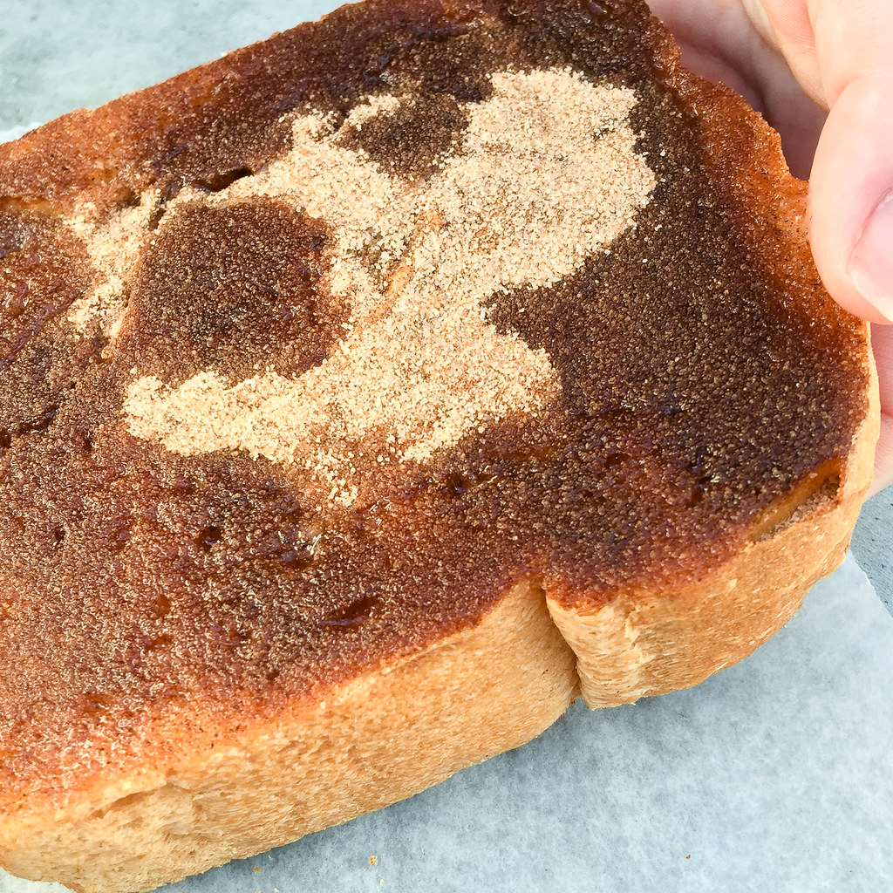

Cinnamon Toast
A cheap breakfast that is reminiscent of a classic cereal.
List of Ingredients and supplies:
- Bread, any type will work well, including gluten free!
- Cinnamon Sugar
- Butter
- Food-safe blow torch
- Optional: Vanilla Drizzle
Steps:
- Toast your bread
- Butter bread
- Sprinkle cinnamon sugar on top
- Lightly torch the top of the cinnamon sugar until it is caramelized
- Enjoy!